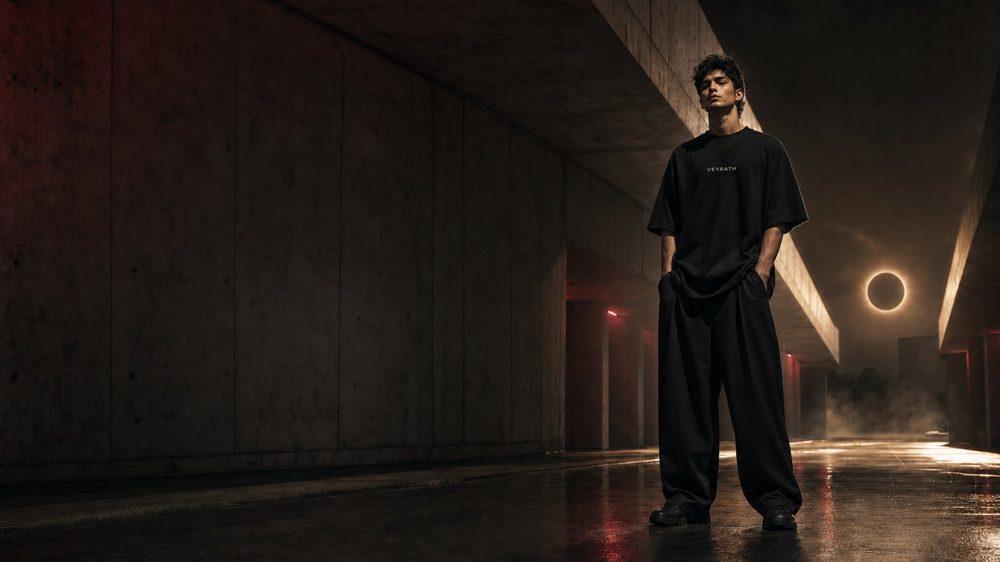

Oversized first
Relaxed silhouettes with deliberate proportion—not simply a larger standard fit.
Our story
VEYRATH exists for the work, ambition and self-belief that grow when nobody is watching.

Born After Dark
VEYRATH is made for the ones who move in silence. Every piece blends oversized streetwear, subtle astrology details, and dark luxury energy — designed to feel powerful without being loud.
We start with oversized T-shirts, then expand the orbit through hoodies, lowers and accessories. Pieces may be made after order through selected print-on-demand partners, helping us create deliberately instead of chasing excess.
What guides us
Every decision returns to fit, restraint, intention and the energy of the hours after dark.
Relaxed silhouettes with deliberate proportion—not simply a larger standard fit.
Celestial references stay subtle, original and designed to be discovered slowly.
Designed for a new Indian streetwear language with a global point of view.
Responsibility
Where possible, VEYRATH uses made-after-order fulfilment to reduce unnecessary inventory. Production methods, materials and packaging may vary by piece and partner; product pages will state what applies. We avoid claims we cannot prove and keep improving as the brand grows.